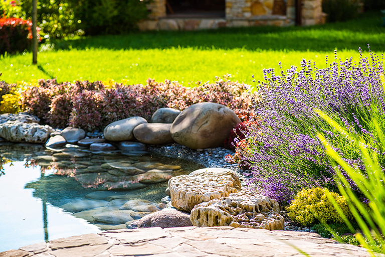

მარადმწვანეები ეზოში: შერჩევა და მოვლა

მარადმწვანეები ინარჩუნებენ ტექსტურას და მოცულობას ზამთარშიც. ბუქსი, ტუია, ჰოლისი — კარგი სტარტერია.
შერჩევის კრიტერიუმები
- კლიმატი: ყინვაგამძლეობა.
- ნათება: მზე/ჩრდილი.
- ნიადაგი: კარგი დრენაჟი აუცილებელია.
მოვლა
ზომიერი მორწყვა, სეზონური სასუქი, მსუბუქი გასხვლა გაზაფხულზე. მულტჩი ინარჩუნებს ტენიანობას.